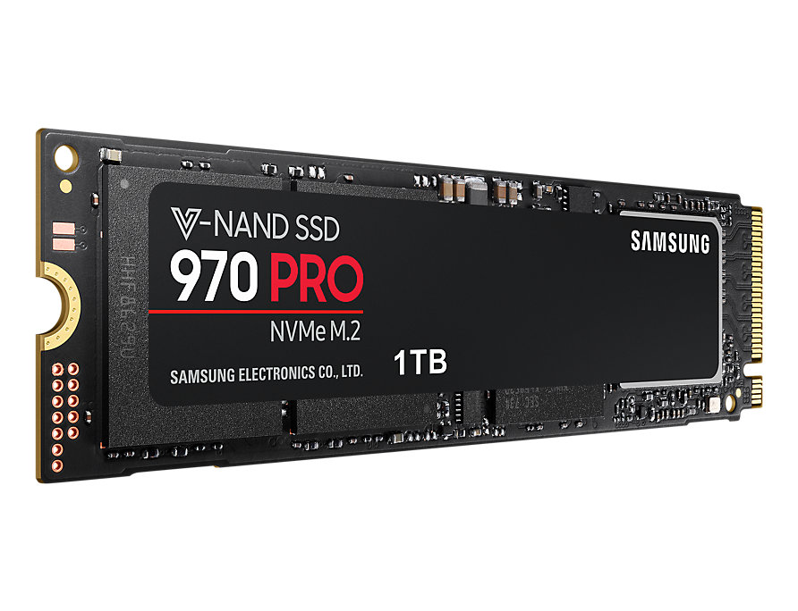

M.2 (ранее известный как Next Generation Form Factor и NGFF)
Карты расширения M.2 могут предоставлять различные функции, например: Wi-Fi, Bluetooth, спутниковая навигация, NFC-радиосвязь, цифровое радио, Wireless Gigabit Alliance (WiGig), Wireless WAN (WWAN). В виде модулей M.2 часто изготавливают быстрые и компактные твердотельные флеш-накопители (SSD). На разъём M.2 выводятся шины PCI Express 3.0, Serial ATA 3.0 и USB 3.0 (включая обратную совместимость с USB 2.0). Спецификация SATA 3.2 по состоянию на август 2013 определила формат «SATA M.2» для носителей информации.
В составе M.2 реализован PCI Express 4x (4 линии) и один порт SATA 3.0 со скоростью до 6 Гбит/с, поэтому в форм-факторе M.2 могут быть реализованы как устройства PCI Express, так и накопители SATA. Используется стандартный PCI Express без каких-либо дополнительных слоёв абстракции. Группа PCI-SIG выпустила спецификацию M.2 версии 1.0 в декабре 2013 года.
Для карт расширения M.2 доступно три варианта реализации логического интерфейса и набора команд, по аналогии со стандартом SATA Express
Стандарт M.2 разрабатывался в качестве обновления и улучшения формата mSATA, позволяя использовать печатные платы большего размера. Если mSATA использовал размеры модулей Mini PCI-E, то M.2 позволил увеличить использование площади карты, например, в M.2 возможны более длинные модули и двухстороннее размещение компонентов на плате. Модули M.2 имеют прямоугольную форму, на одной из сторон карты расположен разъём (75 позиций с 67 контактными площадками с шагом в 0,5 мм). На противоположной стороне находится полукруглое отверстие для фиксации. Каждый контакт выдерживает напряжение до 50 В и ток до 0,5 А. Разъём гарантирует как минимум 60 циклов подключения-отключения. В стандарте M.2 допускаются модули шириной 12, 16, 22 или 30 мм и длиной 16, 26, 30, 38, 42, 60, 80 или 110 мм. Изначально карты M.2 производились с шириной 22 мм и длиной 30, 42, 60, 80 и 110 мм
